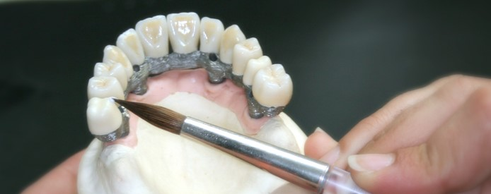

Valplast protezai | Kuo geseni Valplast nei paprasti protezai?
 +370 627 92689 klinika@dentvalda.lt Paslaugos Dantų implantavimas Dantų protezavimas Periodontito gydymas Dantų laminatės Protinių dantų šalinimas Apie Mus Atsiliepimai Kainos Klausimai-Atsakymai Kontaktai Meniu Paslaugos Dantų implantavimas Dantų protezavimas Periodontito gydymas Dantų laminatės Protinių dantų šalinimas Apie Mus Atsiliepimai Kainos Klausimai-Atsakymai Kontaktaivalplast protezai
Autorius Įrašai 2015 31 gegužės @ 16:16 AtsakymasVirginija
Laba diena,noreiau suzinoti ar gaminate Valplast isimamus protezus? jeigu taip ar tai butu galima padaryti rugpjucio men viduryje ir kiek tai uztrunka laiko?Sirdingai dekoju
2015 3 birželio @ 21:07 AtsakymasValdas Labanauskas
Keymaster
Virginija, valplants protezų gamyba trunka apie 10 dienų. Š iuo metu vietų rugpjūčio mėnesiui dar šiek tiek turime.
2015 23 birželio @ 15:30 AtsakymasVirginija
laba diena.Dekoju uz atsakyma ir labai noreciau uzsiregistruoti rugpjucio 20d ,o jeigu tokiai dienai jau neturite laisvu vietu,tai tuomet laukiu jusu atsakymo
2017 1 gruodžio @ 8:49 AtsakymasAlbertas
Labas rytas,norejau suzinoti,ar zmogus be dantu gali naudoti VALPLAST isimamus protezus
2017 22 gruodžio @ 13:35 AtsakymasValdas Labanauskas
Keymaster
Albertai, taip gali.
2017 5 gruodžio @ 11:50 AtsakymasGrazina
Noreciau paklausti,kiek laiko turi praeiti,kad darant 33 danties vainiko prailginima ir del to islupus 34,35 ir 38 dantis butu galima daryti elastine VALPLAST plokstele? Dekoju uz atsakyma.
2017 22 gruodžio @ 13:38 AtsakymasValdas Labanauskas
Keymaster
Gražina, tam kad pagaminti patogų protezą, reikalinga nuimti tikslius atspaudus. Vadinasi po dantų pašalinimo dantenos turi sugyti ir praeiti patinimas, tai gali užtrukti apie 2 savaites.
2018 13 spalio @ 9:45 AtsakymasBronislovas
Turiu tik viena28virsutiniame zandikaulyje,o apatiniame43,45,46ir33,34 per kiek laiko galima pagaminti ir kiek mazdaug tai kainuos?aciu
2018 8 gruodžio @ 17:32 AtsakymasStasė
Laba diena.nesioju išimamas viršutinius protezus.apacioje karuneles ir dar likę keli savo dantys.😄.ar yra galimybė pakeisti tik virsutinius protezus .viršuje dantų nėra.ir kiek tai kainuotų? Ačiū.
2018 21 gruodžio @ 16:05 Atsakymasroma
laba diena norejau paklausti ,jei virsuje liekatik vienas dantis ar tinka valplast plokstele?
2018 27 gruodžio @ 11:36 Atsakymasroma
laba diena ,ar tinka valplast plokstele jei lieka virsuje vienas dantis?
Autorius ĮrašaiAtsakysiu į Jūsų klausimus
Tam, kad galėčiau tiksliau atsakyti į jūsų klausimus, prašau man suteikti kuo daugiau informacijos apie jūsų dantų būklę. Pasinaudokite žemiau esančiu paveikslėliu su dantų numeravimu.
Užklausa E-paštu
Pateikite užklausą užpildydami šią formą ir gaukite atsakymą e-paštu
Dantų numeravimas
Susisiekite
L. Zamenhofo g. 7, Kaunas
+370 627 92689 klinika@dentvalda.ltI V 8:00 19:00
Sekite
Dantų implantai 2020 | Privatumo politika | Asmens duomenų tvarkymo taisyklės | Visos Teises Saugomos.